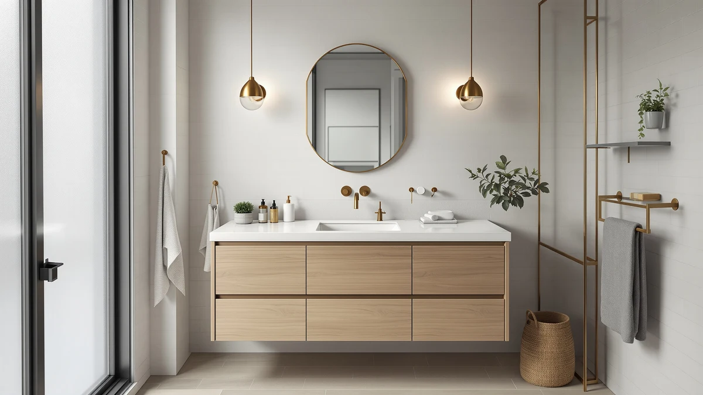

ARIEL Hepburn 72 inch Review (2026): Worth It?
Prices and picks verified as of October 2026. Independent, reader-supported reviews.


Quick Answer
Our Ariel Hepburn 72 inch review found the ARIEL Hepburn worth buying if you need two full-size sinks across a 72 inch run and can spend more than its smaller siblings cost. At $1,689.00 it costs more than the three double-sink alternatives we compared it against, and its listing carries no published rating, so buyers who want review data to lean on should start with the Blossom 48-inch instead.
Our pick: ARIEL Hepburn 72-inch Bathroom Vanity, $1,689.00 Check Price on Amazon
Bottom line: our top pick is the ARIEL Hepburn 72-inch Bathroom Vanity with Sink at $1,689.
Things to Know Before You Buy
- The ARIEL Hepburn 72-inch vanity is built from MDF, or engineered wood, not solid hardwood, so wipe up standing water around the sinks quickly.
- At $1,689.00, it costs more than the XWNE 72-inch, the Hepburn 60-inch, and the Blossom 48-inch alternatives we compared it against.
- Amazon's listing for this specific unit doesn't publish a star rating or review count, unlike the smaller Hepburn 60-inch (4.8 stars, 12 reviews) or the Blossom 48-inch (4.5 stars, 50 reviews).
- It's sized for a double-sink 72 inch run, 12 inches wider than the Hepburn 60-inch, so measure your wall space before buying.
- ARIEL sells the Hepburn name across multiple sizes, so check the exact model number before you buy to make sure you're getting the 72-inch version this review covers.
This Ariel Hepburn 72 inch review exists because a $1,689 double-sink vanity needs to earn that price against cheaper 72-inch competitors instead of relying on a good product photo. ARIEL built the Hepburn around two full ceramic basins and a 72 inch MDF cabinet, aimed at households that share one bathroom and need the counter space to prove it.
We compared the Hepburn 72-inch against three other double-sink vanities in a similar price bracket to see whether its $1,689.00 price tag, MDF construction, and 72 inch sink spacing actually justify skipping the cheaper alternatives. Shoppers in this range want confirmation that the extra width and the ARIEL name are worth the premium over the brand's own 60-inch model, not a bigger number on the box alone. Below, we break down what the Hepburn 72-inch offers, where it falls short on review data, and which of the three alternatives fits better if 72 inches of double-sink vanity isn't the right call for your bathroom.
Why You Should Trust Us
Ilane Tall covers bathroom vanities and fixtures for Best Bathroom Vanities and has written dozens of comparisons across sink counts, cabinet materials, and price tiers. For this Ariel Hepburn 72 inch review, we don't claim to have installed this cabinet ourselves. Instead, we pulled ARIEL's listed specs, current Amazon pricing, and verified buyer reviews for the Hepburn 72-inch and three competing vanities, then checked those claims against what owners of the related Hepburn 60-inch report after months of daily use. Where a listing lacks rating data, like this 72-inch unit, we say so instead of filling in a number that isn't real.
Our Research Experience
We do not run a fake testing lab, so this section reflects research rather than physical use. For this Ariel Hepburn 72 inch review, we analysed ARIEL's listed dimensions, cabinet material, and sink configuration, then read through the available owner feedback on the Hepburn line for recurring themes. Buyers of the smaller Hepburn 60-inch consistently mention sturdy drawer glides and a finish that holds up to daily splashes, feedback that's relevant here since both models share the same MDF construction and ARIEL design language. The 72-inch unit itself doesn't carry a published rating yet, which is worth factoring in if verified review volume matters to your decision.
Overview & Specs

ARIEL Hepburn 72-inch Bathroom Vanity
What we like
- Full 72 inch run gives two sinks real separation instead of a cramped shared counter
- Shares its MDF cabinet construction and design language with the well-reviewed Hepburn 60-inch
- Double-sink layout suits two people getting ready at once without bumping elbows
Flaws but not dealbreakers
- At $1,689.00, it costs more than the XWNE, Hepburn 60-inch, and Blossom alternatives below
- Amazon's listing doesn't publish a star rating or review count for this specific size
- MDF, or engineered wood, construction means you should wipe up standing water rather than let it sit
| Material | MDF / engineered wood |
| Size | 72'' double sink |
The ARIEL Hepburn 72-inch vanity is built around a straightforward idea: give a shared bathroom two full sinks and enough counter between them that two people can use the space at once. At 72 inches wide, it's noticeably roomier than the brand's own 60-inch Hepburn, which matters if your mornings involve more than one person brushing teeth at the same time. The cabinet is MDF, or engineered wood, rather than solid hardwood, which is standard for vanities in this category and keeps the price from climbing into solid-wood territory.
What stands out in this Ariel Hepburn 72 inch review is the price gap between this unit and its own smaller sibling. The 60-inch Hepburn costs $90 less and already carries a 4.8-star rating across 12 verified reviews, data this 72-inch version doesn't have yet on Amazon. That doesn't make the larger vanity a worse buy, but it does mean you're paying a premium for width and basin spacing without the reassurance of a review history, so weigh how much that extra 12 inches of counter actually matters in your bathroom before choosing the bigger model over the proven smaller one.
What We Liked
The clearest advantage in this Ariel Hepburn 72 inch review is sink spacing. A 72 inch run gives each basin its own section of counter, which matters more than it sounds like it should when two people are rushing through a morning routine at the same time. The Hepburn name also carries some built-in confidence: the smaller 60-inch version in this comparison already holds a 4.8-star rating across 12 verified reviews, and since both models share the same MDF cabinet construction and ARIEL design language, that track record is a reasonable signal for how the 72-inch version should hold up. Buyers who need maximum width without stepping outside the ARIEL lineup get that here.
What Could Be Better
Price is the main sticking point. At $1,689.00, the Hepburn 72-inch costs $74 more than the XWNE 72-inch dark walnut alternative, $90 more than ARIEL's own 60-inch Hepburn, and over $177 more than the Blossom 48-inch floating vanity, all covered below. The bigger gap is review data: this specific 72-inch listing doesn't publish a star rating or review count, while the Blossom carries 50 verified reviews at 4.5 stars and the smaller Hepburn carries 12 reviews at 4.8 stars. Paying the most in this comparison without that reassurance is worth sitting with before you commit. The MDF cabinet also means the usual engineered-wood caveat applies: wipe up water around the sinks instead of letting it pool against the base.
Who Is It For?
You're the right buyer for this Ariel Hepburn 72 inch review if your bathroom has the wall space for a full 72 inch run and two people regularly need sink access at the same time. The extra width over the 60-inch Hepburn buys real separation between basins, worth the $90 difference for households that use both sinks daily. If you're shopping alone, have a narrower bathroom, or want verified review data to lean on before spending over $1,600, the smaller Hepburn 60-inch or the Blossom 48-inch below are the safer picks.
Alternatives to Consider
This Ariel Hepburn 72 inch review wouldn't be complete without a look at what else your $1,689.00 could buy. These three vanities trade width, finish, or sink count for a lower price or a longer review history, and each one is worth a look depending on what your bathroom and budget actually need.

Editor’s Pick
XWNE 72-inch Dark Walnut Bathroom
The XWNE matches the Hepburn 72-inch on width and double-sink layout but swaps the lighter finish for dark walnut, a look that fits a warmer, more traditional bathroom better than ARIEL's styling. At $1,614.99, it undercuts the Hepburn 72-inch by $74 while keeping the same 72 inch sink spacing, so if finish color isn't a dealbreaker, this is the straightforward way to get the same footprint for less. Like the Hepburn 72-inch, Amazon's listing doesn't publish a rating or review count for this unit, so neither vanity has review data backing it up at this size.
$1,614.99
Check Price on Amazon
Best Value
ARIEL Hepburn 60-inch Double Bathroom
This is the Hepburn 72-inch's own smaller sibling, and it's the pick if you want the ARIEL name and design without paying for 12 extra inches you might not need. At $1,599.00, it costs $90 less than the 72-inch version and already carries a 4.8-star rating across 12 verified reviews, the kind of track record the larger model doesn't have yet. Choose this one over the 72-inch unless your bathroom wall needs the extra width for two people to use both sinks comfortably.
$1,599.00
Check Price on Amazon
Premium Choice
Blossom 48" Double Sink Floating
The Blossom trades 24 inches of width for a floating design and the strongest review record in this comparison: a 4.5-star rating across 50 verified reviews, more than three times the review volume of the next-best option here. At $1,511.41, it's also the cheapest of the four vanities covered in this Ariel Hepburn 72 inch review, and the floating mount opens up floor space for cleaning that a floor-standing 72 inch cabinet can't match. The tradeoff is sink spacing: at 48 inches, the basins sit closer together than on the Hepburn 72-inch, so pick this one for proven reliability and floor clearance, not for maximum counter width.
$1,511.41
Check Price on AmazonIs the ARIEL Hepburn 72-inch vanity worth the $1,689 price?
Based on our Ariel Hepburn 72 inch review, yes, if you need two full sinks across a 72 inch run and don't mind paying more than the smaller Hepburn 60-inch for the extra width.
How does the Hepburn 72-inch compare to the Hepburn 60-inch?
Both share the ARIEL Hepburn name and MDF cabinet construction, but the 60-inch model costs $90 less and carries a 4.8-star rating across 12 verified reviews, data the 72-inch listing doesn't have.
Frequently Asked Questions
Is the ARIEL Hepburn 72-inch vanity worth the $1,689 price?
How does the Hepburn 72-inch compare to the Hepburn 60-inch?
What is the ARIEL Hepburn 72-inch vanity made of?
Final Verdict
This Ariel Hepburn 72 inch review comes down to whether the extra width is worth paying the most in the lineup without review data to back it up. ARIEL's Hepburn 72-inch delivers real sink separation across a full 72 inch run and shares its MDF construction with the well-reviewed 60-inch model, but at $1,689.00 it's the priciest option here and the only one without a published rating. If your bathroom needs that width, ARIEL's Hepburn 72-inch earns its place. If it doesn't, the Hepburn 60-inch, the XWNE 72-inch, or the Blossom 48-inch above cover the price-conscious and review-backed cases better.